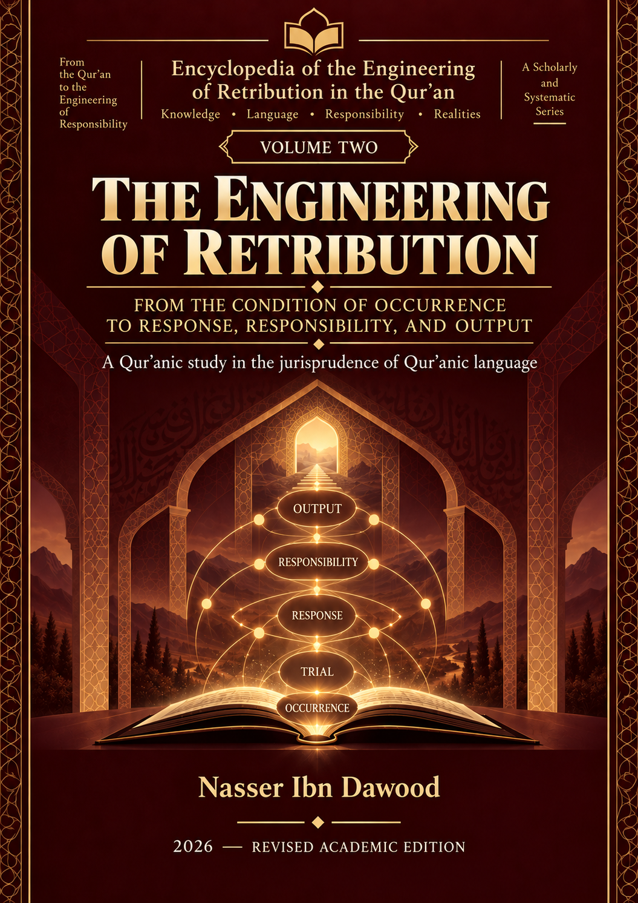

Nasser Ibn Dawood
Text extracted from the author-supplied Word edition; consult the original source.
Preparing the reader…
The Engineering of Affliction: The Operator's Manual for the Quranic Human
I. The Global Knowledge Manifesto
Knowledge is a universal right. The author firmly believes that wisdom should not be locked behind paywalls or language barriers.
Global Access Policy: All books in this library are available for free in multiple digital formats (PDF, HTML, DOCX, TXT).
The Digital Library: As of early 2026, the collection hosts 68 volumes (34 in Arabic and 34 in English), fully optimized for AI-assisted research and digital archiving.
Official Platforms:
Main Website: nasserhabitat.github.io/nasser-books/
GitHub: nasserhabitat/nasser-books
II. Translator’s Note: The Bridge of Meaning
This English edition is a condensed conceptual adaptation. It is not a word-for-word translation, but rather an "extraction of essence." It presents the core philosophical framework in accessible English, omitting the exhaustive linguistic debates and classical references found in the original Arabic text.
For the academic researcher: The original Arabic version remains the primary source for comprehensive linguistic analysis, detailed exegesis (Tafsir), and the complete bibliography.
III. Introduction: From Passive Understanding to Active Operation
The core problem this book addresses is the fragmentation of Quranic concepts. In contemporary thought, monumental terms like "worship," "faith," "affliction," and "patience" have become isolated moral virtues. This book employs "reverse engineering" through Quranic linguistics to rebuild these concepts as an interconnected "operating system" for human consciousness. The Quran is not merely a descriptive or ritualistic text; it is an operational manual, and the human being is its active operator.
IV. The Grand Structural Map: From Disruption to the Great Fortune
The common religious mindset views affliction as punishment, patience as passive endurance, and fortune as random luck. However, the Quranic system presents a unified, transformative sequence designed to rebuild the human entity:
Fitnah (Disruption): Not a mere temptation, but a structural disruption that dissolves false stability and exposes inner realities.
Balaa (Applied Stress): The introduction of specific pressures—both positive (wealth, power) and negative (fear, loss)—designed to trigger a response and test the human system's integrity.
Ibtila (The Operating Environment): Life itself is the overarching laboratory where these forces interact. Affliction is not an anomaly; it is the environment of existence.
Sabr (Patience/Stabilization): Far from passive suffering, Sabr is an active internal mechanism that stabilizes the human structure, preventing its collapse under pressure and maintaining directional focus.
Ihsan (Excellence/Re-engineering): Producing a superior response that transcends mere reaction, transforming negative energy into positive, constructive action.
Tamhees (Purification/Refinement): The rigorous filtration process that follows transformation, removing psychological impurities and solidifying the core of faith.
Al-Hadh Al-Atheem (The Great Fortune): Never random luck; it is the ultimate, cumulative result of successfully navigating this interactive trajectory.
V. Operating Systems (Tools of the Trade)
Within this engineering paradigm, rituals shift from mere traditions to vital protocols for system maintenance:
Salah (Prayer): Functions as a system reset and periodic calibration. It discharges accumulated pressure, prevents cognitive overload ("system clogging"), and realigns the human compass with its divine source.
Breathing: Represents the rhythm of inputting meaning. Conscious breathing regulates the processing speed of awareness and stabilizes the system during turbulent times.
Water: The structural carrier of divine command and information. It provides the necessary flexibility and plasticity for the human entity to adapt and purify itself.
VI. Time and Transformation
Laylat al-Qadr (The Night of Decree): A cosmic moment of "firmware update." It is the critical juncture where a conscious human can rewrite their response codes and fundamentally alter their trajectory.
Istawa (System Mastery): Reaching structural maturity and self-mastery over the "Cognitive Throne" (the human brain and its operational centers), allowing one to govern internal impulses rather than being governed by them.
Fajr (The Dawn): The explosive moment of manifestation, where the results of inner engineering transition from unseen programming into visible, empowered reality.
VII. Conclusion: The Human as an Operator
You are not a victim of circumstance, nor a passive recipient of fate. You are the "authorized operator" of your own existence. By mastering your inputs and engineering your responses through patience, excellence, and conscious connection, you shape your ultimate fortune. The cosmic system does not dictate your end; your interaction with the system does.